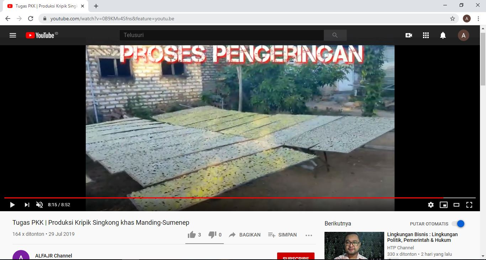

profil UD.Potre Koneng
UD.potre koneng merupakan pabrik berbagai macam keripik diantaranya kripik singkong, sukun, marning jagung, kacang karpes, dan masih banyak yang lainnya. baca selengkapnya >>>>>>>
proses pembuatan kripik singkong
untuk proses pembuatannya bisa dibilang susah susah gampang yang harus disiapkan dalam proses pembuatan yaitu singkong yang bagus baca selengkapnya >>>>>>>
